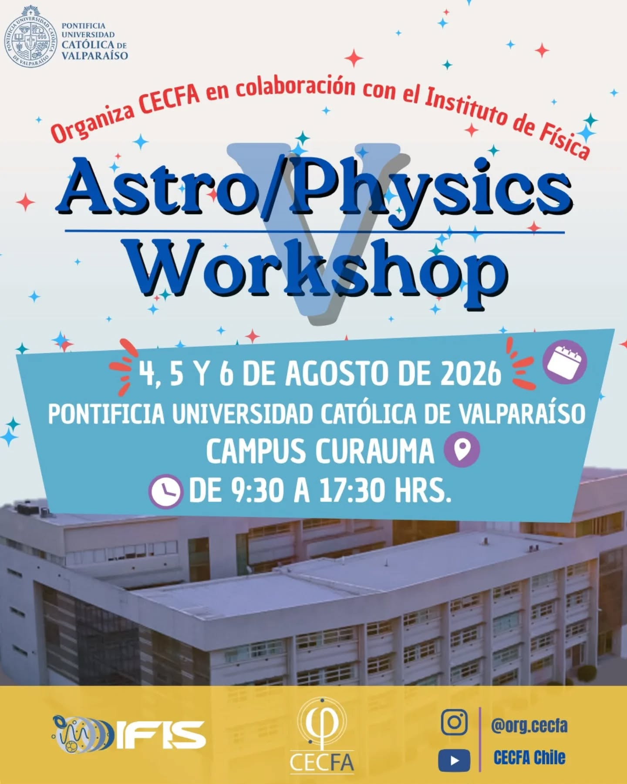
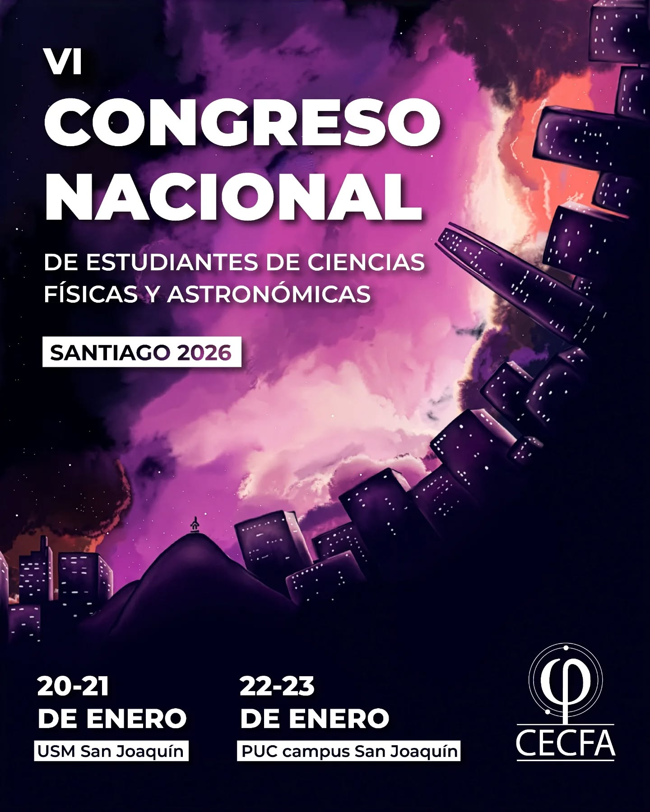
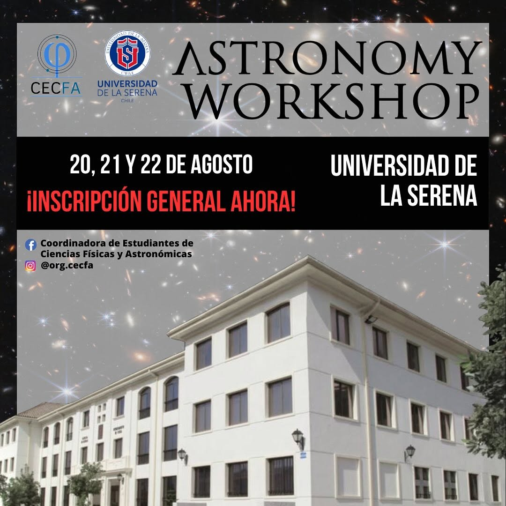
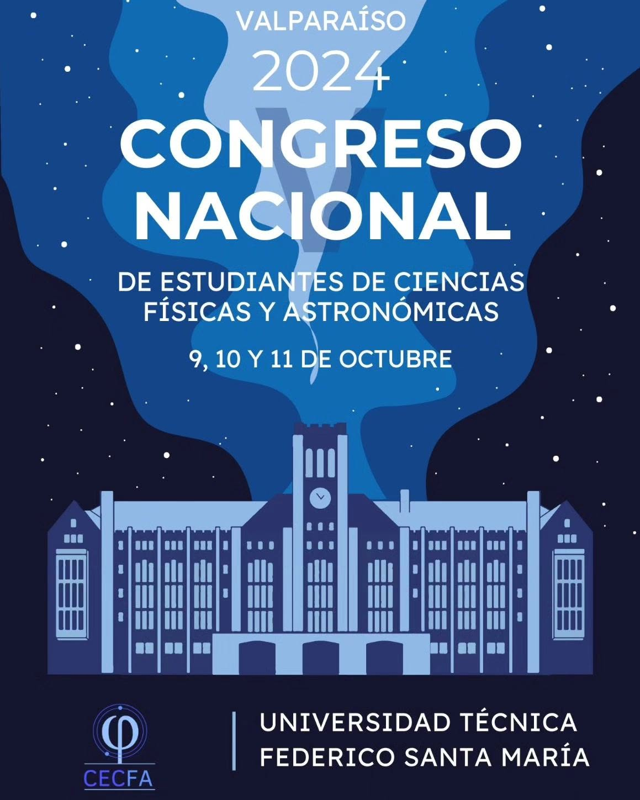
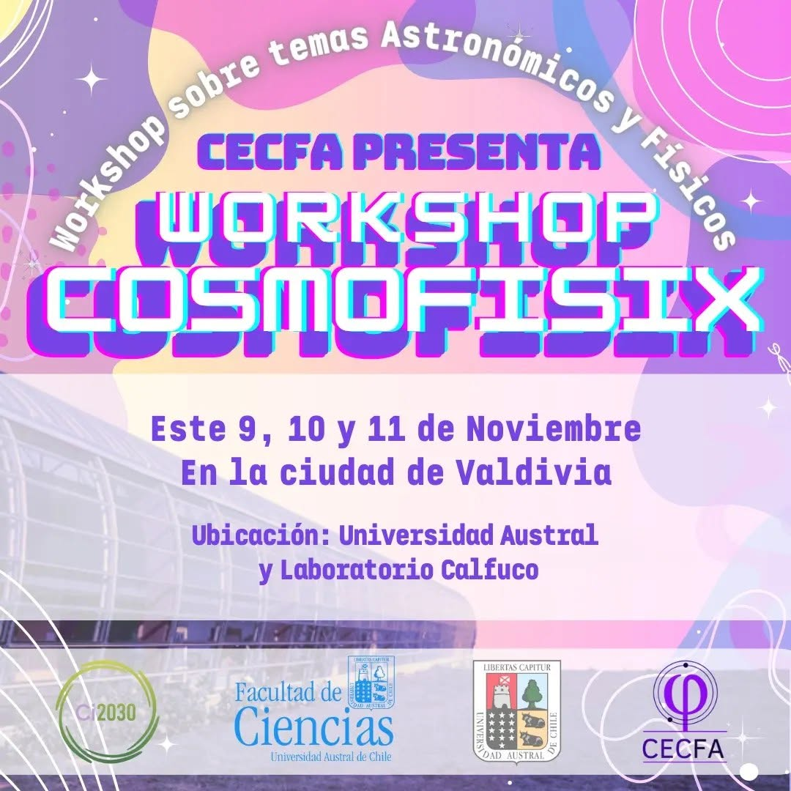
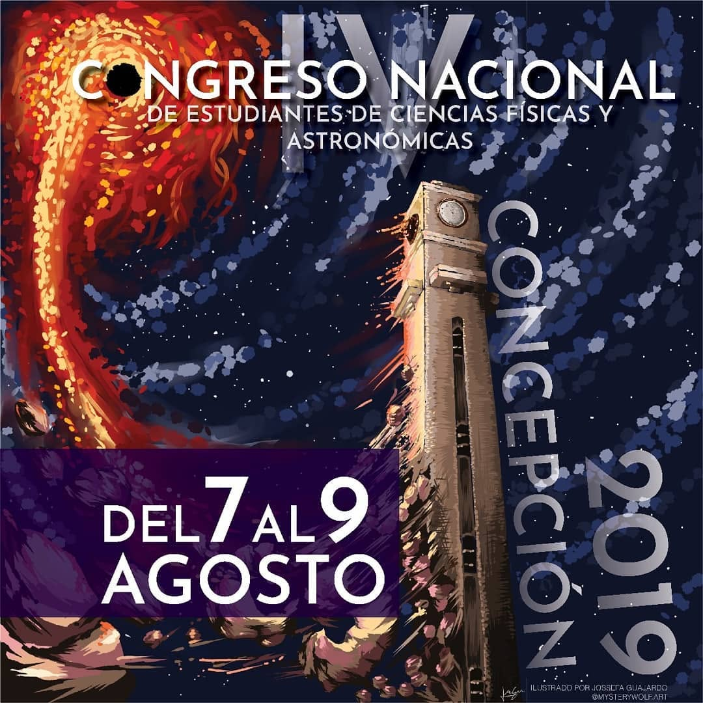
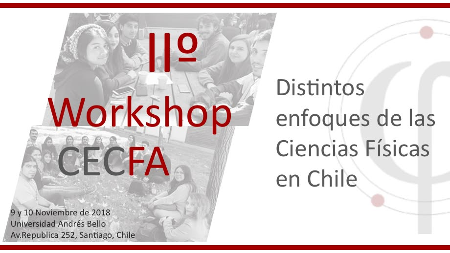
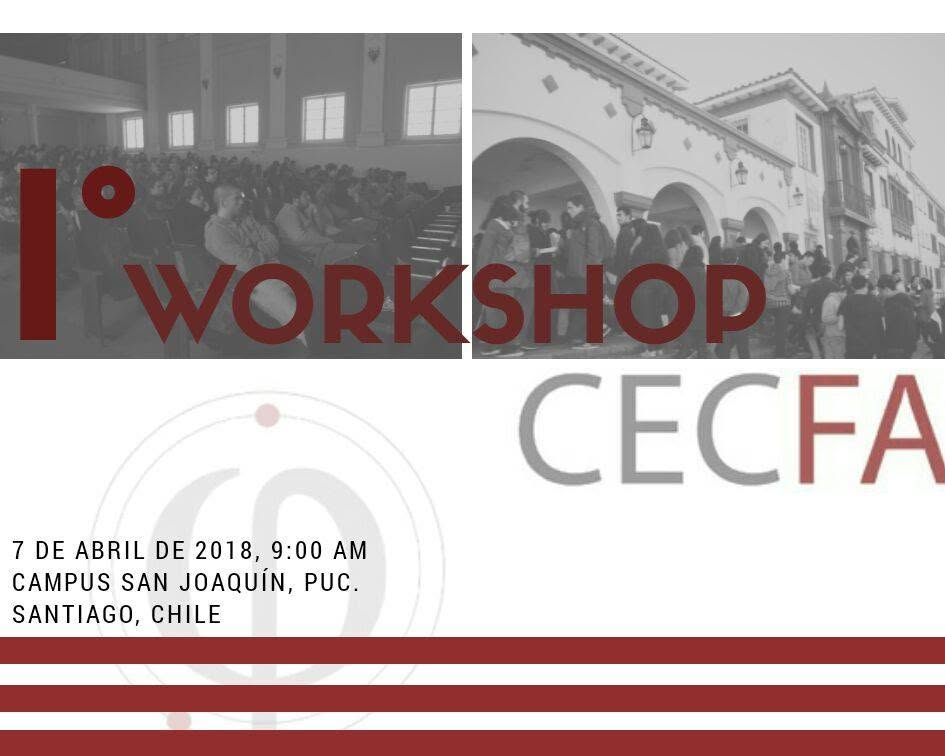
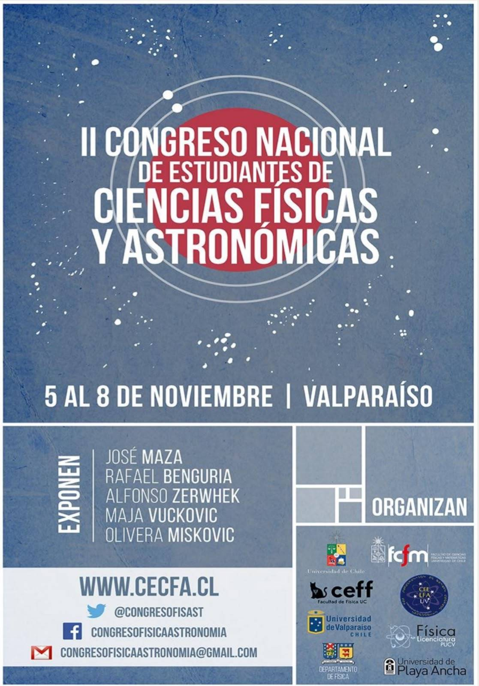
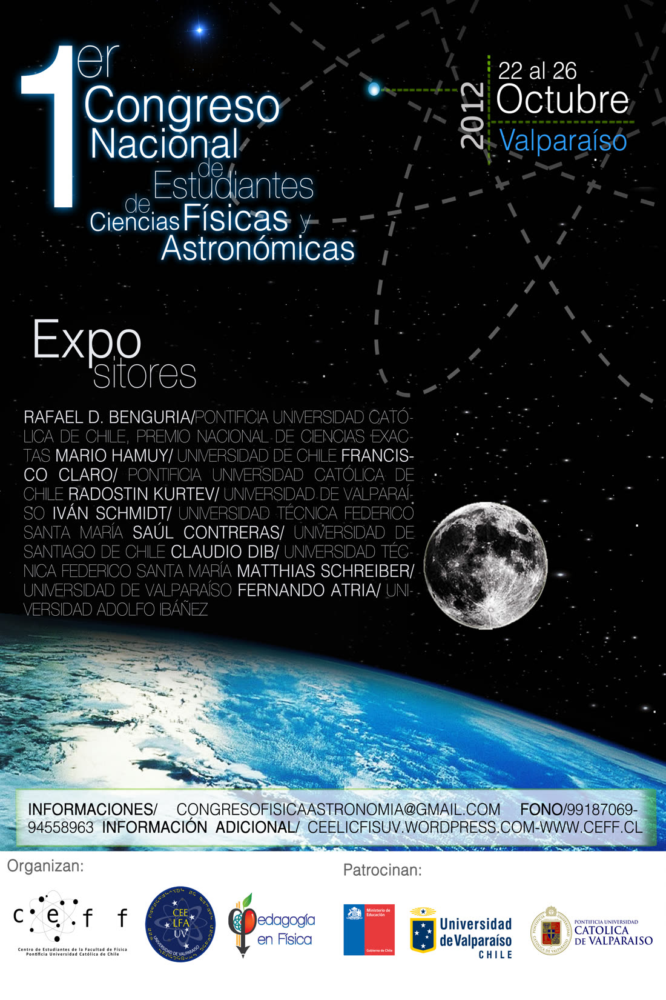

Finalizado
V Workshop CECFA

¡Gracias a todas y todos quienes participaron! Tres días de charlas, talleres prácticos y encuentro entre estudiantes de todo Chile en Curauma. Nos vemos en la próxima.
Chile · Desde 2012
Somos una organización nacional de estudiantes de pregrado que crea instancias para acercarte a las distintas áreas de la física y la astronomía: congresos, workshops, conversatorios y más.
λ 434 nm · Quiénes somos
CECFA es la Coordinadora de Estudiantes de Ciencias Físicas y Astronómicas. Trabajamos a nivel nacional y nuestro mayor objetivo es crear instancias donde estudiantes de pregrado puedan tener acercamientos a distintas áreas de estas ciencias.
Estamos compuestos en su mayoría por estudiantes de pregrado de carreras afines a la física y la astronomía a lo largo de Chile, organizados en un Consejo de Representantes por carrera y campus, comisiones de trabajo y una Directiva. Nuestro sello: por y para estudiantes.
λ 486 nm · Eventos
Finalizado

¡Gracias a todas y todos quienes participaron! Tres días de charlas, talleres prácticos y encuentro entre estudiantes de todo Chile en Curauma. Nos vemos en la próxima.
Próximamente
La instancia más grande de CECFA: estudiantes, investigadores e investigadoras de todo el país compartiendo ciencia durante varios días. Más información pronto.
Sigue nuestras redes para novedades4 – 6 de agosto · Pontificia Universidad Católica de Valparaíso, campus Curauma.
20 – 21 de enero en la Universidad Técnica Federico Santa María, campus San Joaquín, y 22 – 23 de enero en la Pontificia Universidad Católica de Chile, campus San Joaquín.

20 – 22 de agosto · Universidad de La Serena.

9 – 11 de octubre · Universidad Técnica Federico Santa María, campus Casa Central, Valparaíso.

9 y 10 de noviembre · Universidad Austral de Chile, Valdivia.

7 – 9 de agosto · Universidad de Concepción.

9 y 10 de noviembre · Universidad Andrés Bello, campus República, Santiago.

7 de abril · Pontificia Universidad Católica de Chile, campus San Joaquín.

9 – 12 de agosto · Universidad de La Serena.

5 – 8 de noviembre · Valparaíso, itinerante entre varias sedes: Universidad de Playa Ancha y Universidad Técnica Federico Santa María, campus Casa Central.

22 – 26 de octubre · Universidad Técnica Federico Santa María, campus Casa Central, Valparaíso.

λ 656 nm · Reseñas